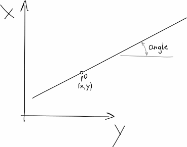

Helper Functions¶
|
convert degrees to a slope (\(\Delta x / \Delta y\)) |
|
get vertical end of the channel based on the radius of the channel and an end angle |
|
get function/expression of a straight line with a given point which it intercepts |
|
function of a vertical line |
|
function of a horizontal line |
|
function of a circle |
|
Does Ramer-Douglas-Peucker simplification of a curve with dist threshold. |
- shape_generator.helpers.deg2slope(degree)[source]¶
convert degrees to a slope (\(\Delta x / \Delta y\))
Slope¶
- shape_generator.helpers.channel_end(r, end_degree)[source]¶
get vertical end of the channel based on the radius of the channel and an end angle
- Parameters
- Returns
height of the channel when the circle reaches a certain angle
- Return type

Channel end¶
- shape_generator.helpers.ramer_douglas(line, dist)[source]¶
Does Ramer-Douglas-Peucker simplification of a curve with dist threshold.
line is a list-of-tuples, where each tuple is a 2D coordinate
Usage is like so:
>>> myline = [(0.0, 0.0), (1.0, 2.0), (2.0, 1.0)] >>> simplified = ramer_douglas(myline, dist = 1.0)
Class Functions
- class shape_generator.helpers.Slope(slope, unit=None)[source]¶
get function/expression of a straight line with a given point which it intercepts
- Parameters
- Returns
linear function
- Return type
 Straight line¶
- class shape_generator.helpers.Vertical(y=None)[source]¶
function of a vertical line
for a shape curve this means a constant width